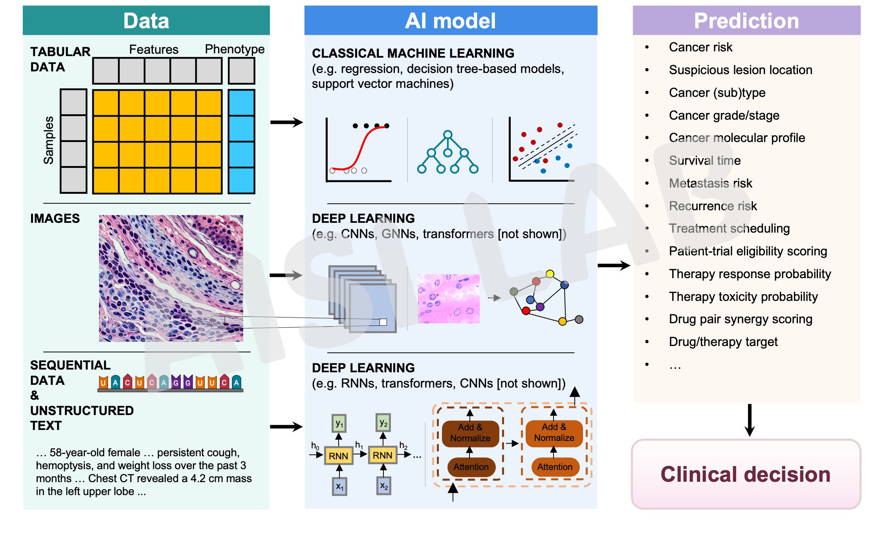
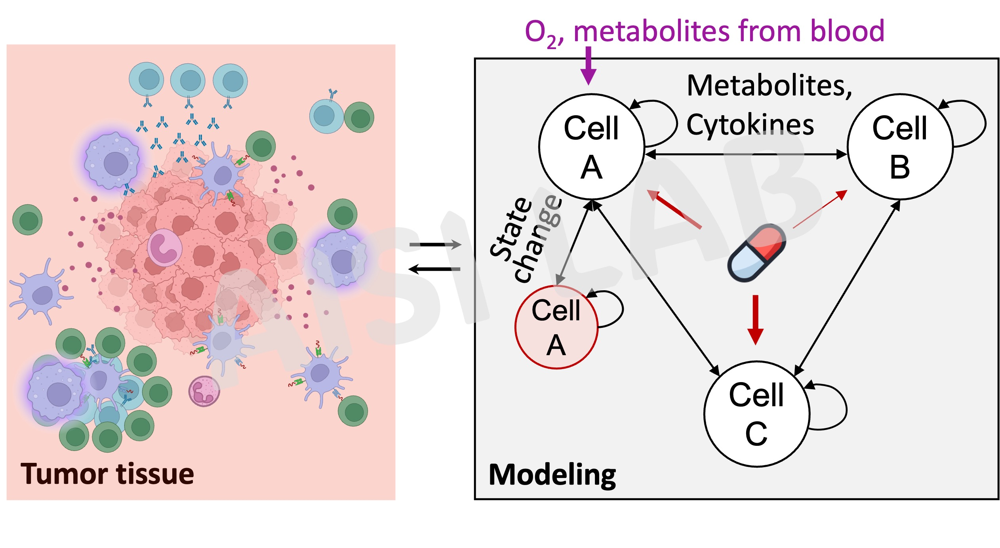
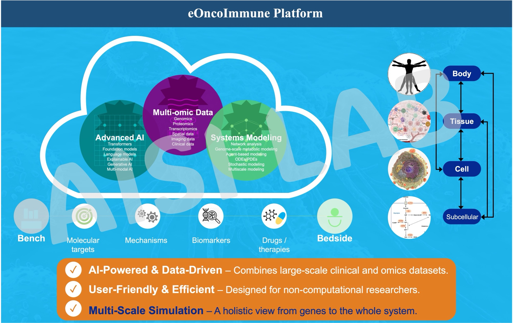

We study why cancer immunotherapy works for some patients but fails—or causes harm—for many others, and how we can change that. Our work spans three connected directions that together link patient outcome prediction, mechanistic understanding, and rational therapy design.
We are an interdisciplinary group at the interface of clinical oncology, immunology, and computation. Our goal is to make immunotherapy more predictive, equitable, and programmable, so that treatment decisions and new therapies are guided by mechanism and data rather than trial-and-error.
Our work is clinically motivated and translational by design. We collaborate closely with clinicians, experimental scientists, and patients, and we are committed to open, collaborative, and reproducible science.
From Data Integration to Clinical Decision Support
Immunotherapy has transformed cancer care, yet most patients fail to benefit, and a subset experience severe, sometimes life-threatening toxicities. A central focus of the AISI Lab is to predict—before treatment begins—who will respond, who will not, and who is at risk of adverse events.
We collaborate with clinicians and patients to validate these models in real-world and prospective studies, translating computational biomarkers into practical clinical tools.

From Correlation to Causal Inference
Prediction alone is not enough. To help patients who do not respond to current therapies, we seek to understand why immunotherapy fails and how resistance emerges.
We use single-cell and spatial profiling to map immune and tumor states, their interactions, and how they are organized inside tumors. By integrating these data with computational and systems biology, we identify reversible resistance mechanisms — such as hypoxia-induced neutrophil reprogramming or translational dysregulation — that can be therapeutically targeted to re-sensitize immunologically "cold" tumors.

From Mechanistic Understanding to Rational Design
Our long-term vision is to transform immunotherapy from empirical intervention into a model-guided, rational design paradigm.
We are building toward an eOncoImmune digital twin: a multi-scale framework that integrates biological knowledge and patient-specific data to simulate tumor–immune dynamics and therapeutic response. This integrative effort connects prediction, mechanism, and intervention into a coherent translational framework.
